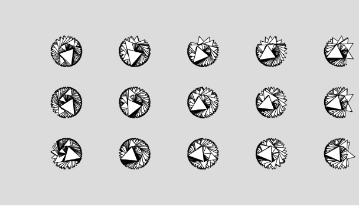
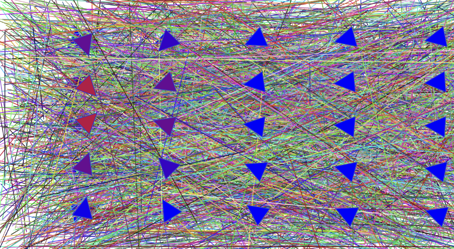

Experiment 2 - Vector Art, Animation & Interactivity
Imitate
Inspired by the P_2_1_1_04 generative design I wanted to dive into the p5.js code and understand how the code was updating to get the cursor’s x and y positions at all times
To start off I wanted to instantiate different shapes to populate on the canvas. Along with this depending on where the cursor is on the screen the shapes would change colors to indicate whether the shape is closer to the cursor or further away. It would be like a game of hot and cold.
My second inspiration for this assignment was to add a line color changing effect to the background. I was inspired by P_2_0_03 generative design. I wanted to recreate this with more vibrant colors and create a light show effect.
Integrate
Wanting to create multiple shapes to be populated in different positions on the canvas I looked at the example code from the P_2_1_1_04 generative designs. I was able to come up with a for loop that would loop through the drawing of the arrowheads evenly spaced out in rows.
he next step would be to get the arrowheads to follow the location of the cursor on the canvas. Using the same example I was able to recreate this interaction. However, I accidentally created an interesting effect. In which the arrows created circles out of these arrowheads when following the cursor direction. I decided to keep this happy accident in the experiment as it added an interesting illusion to the arrowheads.
Innovate
The next step I wanted to integrate into this experiment was a color changing feature. I wanted to feel like the user was playing a game of hot and cold depending on the cursor's position. I was able to do this by utilizing an if statement. I messed around with the radius number until it felt like a good distance away from the cursor. The statement would be checking the distance of the arrowhead to the proximity of the cursor. The arrowheads closest to the center of the cursor detection radius would be a much brighter red. The further away the arrowheads were from the cursor the color would slowly start to transition to blue.
The next step was to create the color changing lines effect for the background. In starting I was able to get lines to randomly generate on the canvas. Getting each line to change colors was not difficult to accomplish. This resulted in an interesting effect
I felt like this was a bit too much going on for the human eye. So I decided to find a way to max the number of lines created. To do this I decided to have an if statement that would check to see if 500 lines have been generated. I simply decided on 500 based on trial and error.
Reflection
I completed this experiment independently. It was a tedious task as I had never used the p5.js library before. However, with my knowledge of JavaScript, I quickly grasped the various p5.js examples provided. Most of my time on this project was spent searching for different examples and selecting elements from them that would contribute to my ultimate goal.
Originally, I aimed to create a color-changing effect for the background, but this proved more challenging than anticipated. Every example I found based the gradient color-changing effect on the cursor's distance from the center of the canvas. I abandoned that idea as I was never satisfied with the results. However, during these attempts, I stumbled upon some interesting effects on the arrowheads. These turned out to be happy accidents that I decided to keep in the project.
As my vision continued to take shape, I wanted to convey more about myself to the audience. This led me to experiment with colors to achieve bright and vibrant tones. Being a fan of House/EDM music, I aimed to reflect that in the final result of this art piece.
Results
Inspired by my passion for EDM/House music I wanted to create a piece that would represent the light shows that can be seen at these events.
Press Delete: Reset Canvas